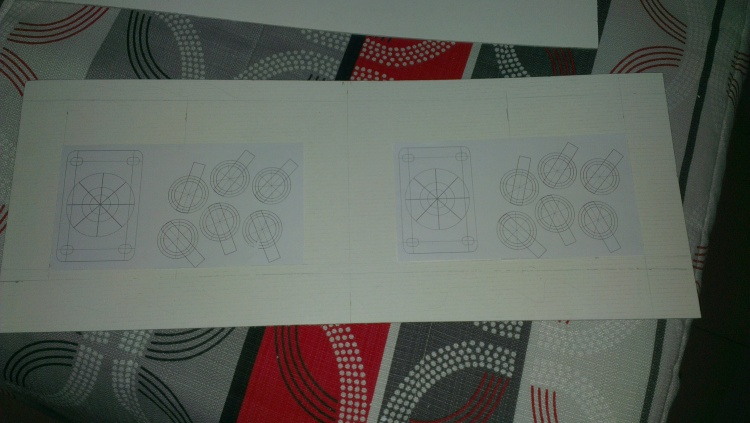
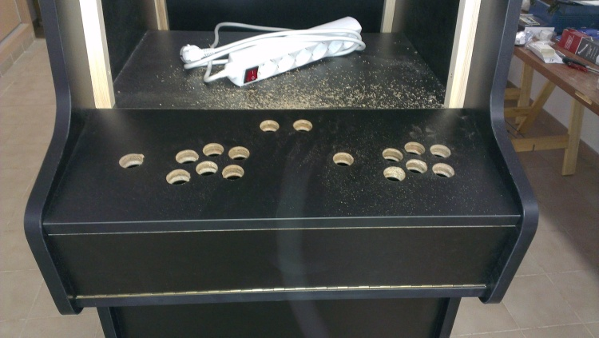
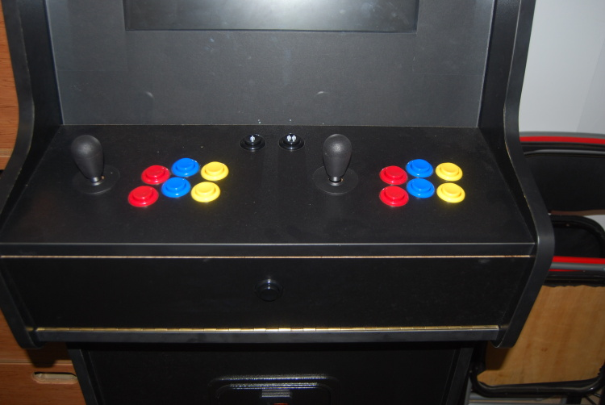

Los Controles
Para el panel de control me he basado en el siguiente modelo:

Este modelo lo he obtenido del foro de ZonaArcade, del siguiente link: http://zonaarcade.forumcommunity.net/?t=13788157
Los pasos que he seguido para diseñar y construir el panel de controles han sido los siguientes:
Primero he creado una plantilla de cartón para realizar las pruebas de distribución de botones y palancas.

Después de esto he hecho los agujeros del panel de control sobre un trozo de aglomerado de igual tamaño que este, para ver como quedaba y comprobar que estaba todo correcto.
Prueba panel de control
Después de comprobar que estaba todo correcto he hecho los agujeros sobre el panel real.

Después de realizar los agujeros he procedido montar los botones y las palancas.

Después de montar los botones y palancas he montado el cableado de estos. Al mismo tiempo que estaba cableando los botones los etiqueté.

El panel de control, una vez montado, ha quedado de esta forma:

Además de los botones de los controles le he añadido un botón frontal negro, puede apreciarse en la imagen anterior, para salir de los juegos, además de 2 botones para pinball (uno a cada lado de la máquina) y un monedero.